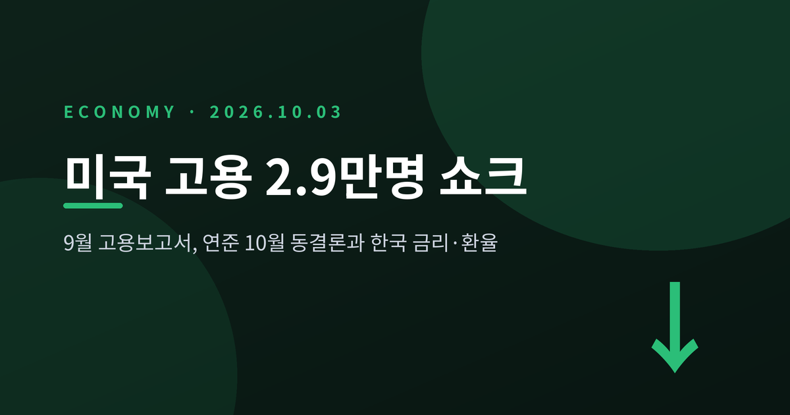
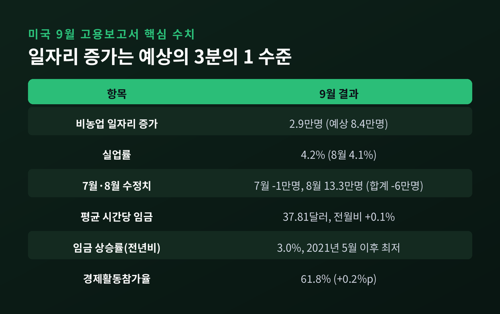
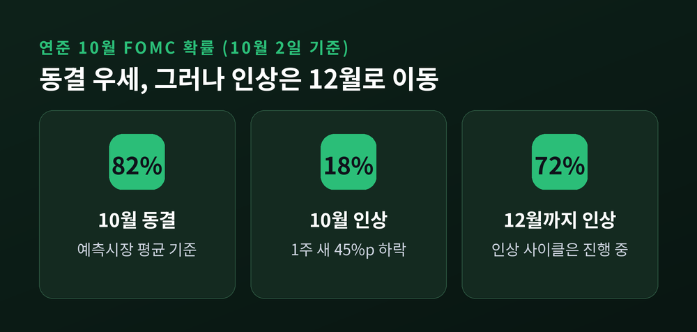
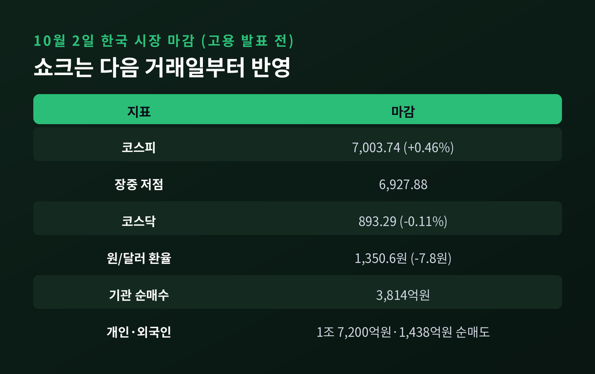
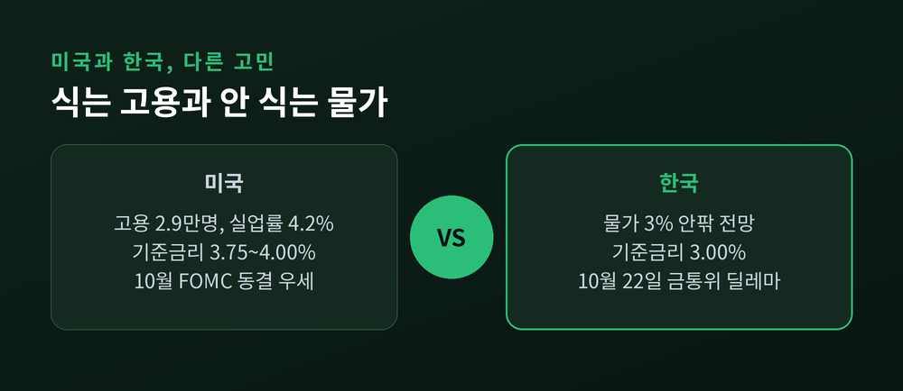
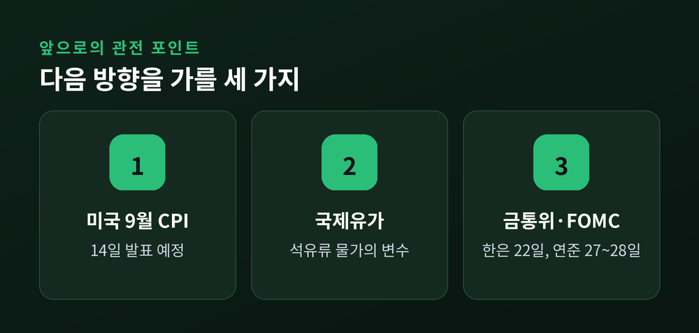

미국 9월 고용 2.9만명 쇼크, 연준 10월 동결론과 한국 금리·환율 영향

이번 글에서는 현지시간 10월 2일 발표된 미국 9월 고용보고서와 그 파장을 정리해 보겠습니다. 일자리는 2만 9천명 늘어나는 데 그쳤고 실업률은 4.2%로 올랐습니다. 연준의 10월 추가 인상 가능성이 크게 낮아졌고, 한국은 금리·환율·증시 세 갈래로 영향을 받게 됩니다.
9월 고용보고서, 무엇이 나왔나
미 노동부 노동통계국에 따르면 9월 비농업 일자리는 2만 9천명 증가했습니다. 시장 예상치는 8만 4천명 안팎이었습니다. 예상의 3분의 1 수준에 그친 셈입니다.
실업률은 4.2%였습니다. 8월의 4.1%보다 0.1%포인트 높고, 시장이 점쳤던 4.1%도 웃돌았습니다.
구성도 좋지 않았습니다. 민간이 4만 6천명 늘고 정부가 1만 7천명 줄어 합계 2만 9천명이 됐습니다. 의료(+1.7만), 건설(+1.1만), 제조(+0.9만)는 늘었지만 정보(-1만)와 금융(-0.7만)은 줄었습니다. 의료 증가폭은 최근 12개월 월평균 3만 3천명의 절반 수준이었습니다.
임금도 식었습니다. 평균 시간당 임금은 37.81달러로 한 달 전보다 0.1% 올랐습니다. 예상치는 0.3%였습니다. 전년 대비 상승률은 3.0%로, 2021년 5월 이후 가장 낮은 수준입니다.

숫자보다 무거운 것은 수정치
이번 보고서의 더 불편한 대목은 과거치 하향입니다. 7월은 2만 1천명 증가에서 1만명 감소로 바뀌었습니다. 8월은 16만 2천명에서 13만 3천명으로 내려갔습니다. 두 달 합쳐 6만명이 깎였습니다.
예전엔 '8월까지는 괜찮았다'는 해석이 가능했습니다. 지금은 7월이 마이너스로 돌아선 흐름 위에 9월이 얹혔습니다. 고용 둔화가 한 달의 부진이 아니라 몇 달에 걸친 추세일 수 있다는 뜻입니다.
다만 해석이 한쪽으로만 기울지는 않습니다. 뱅가드의 애덤 시클러 수석이코노미스트는 채용은 부진해도 해고는 눈에 띄게 적다는 점을 짚으며, 이번 자료가 연준의 '인내'를 뒷받침할 것이라고 평가했습니다. 일자리 증가가 멈춰 가는 것과 일자리가 무너지는 것은 다른 이야기입니다. 참가율이 61.8%로 0.2%포인트 올랐다는 점을 보면, 실업률 상승에 구직자 유입이 일부 작용했을 여지도 있습니다.
국채금리는 급락했지만, 마감은 달랐습니다
발표 직후 채권시장은 즉각 반응했습니다. 미 10년물 국채금리는 장중 5.17~5.18%까지 내려 5~6bp 떨어졌고, 2년물은 4.723%로 6.4bp 하락했습니다.
여기서 짚을 점이 있습니다. 보도에 따라 마감 수치가 엇갈립니다. 야후파이낸스는 10년물을 5.21%(-0.02%포인트)로, 이코노미블록은 5.283%(+0.041%포인트)로 전했습니다. CNBC도 '급락'과 '소폭 상승'을 다룬 기사를 따로 냈습니다. 장중 급락이 되돌려졌다고 보는 편이 정확합니다.
이유는 어렵지 않습니다. 고용이 식어도 유가와 물가 기대가 금리의 바닥을 받치고 있기 때문입니다. iM증권 김명실 연구원도 고용 둔화가 확인되더라도 10년물 금리는 유가와 물가 기대에 막혀 하방이 제한적이라고 짚었습니다. 브렌트유는 배럴당 100달러를 넘는 수준으로 보도됐습니다.
미국 증시는 오히려 올랐습니다. 나스닥은 장중 사상 최고치를 기록했고, 주요 지수는 상승 마감했습니다. 나쁜 소식이 곧 금리 인상 부담 완화로 읽힌 하루였습니다.
연준 10월 FOMC, 인상에서 동결로
연준은 9월 16일 FOMC에서 만장일치로 25bp를 올렸습니다. 기준금리는 3.75~4.00%가 됐고, 2023년 7월 이후 첫 인상이었습니다. 케빈 워시 의장은 "인플레이션은 너무 높고 너무 오래 지속됐다"고 말했습니다. 점도표에서는 위원 18명 가운데 12명이 연내 25bp 추가 인상을 예상했습니다.
그 흐름이 이번 고용 지표로 한 번 꺾였습니다. 10월 27~28일 FOMC의 동결 확률은 CME 기준 80~84%로 집계됐습니다. 예측시장(칼시·폴리마켓)에서는 동결 82%, 인상 18%였고, 일주일 전보다 인상 확률이 45%포인트 떨어졌습니다.
그렇다고 인상 사이클이 끝났다는 신호는 아닙니다. 같은 예측시장에서 12월까지 인상될 확률은 72%였습니다. 시장이 읽는 것은 '인하'가 아니라 '속도 조절'입니다. 제프리스의 톰 사이먼스 수석이코노미스트도 연준에는 추가 인상에 나서기 전에 시간이 있다고 평가했습니다.

한국에는 어떤 영향이 올까
먼저 시차를 짚어야 합니다. 한국 시장은 고용 발표 이전인 10월 2일 오후에 마감했고, 10월 3일은 토요일입니다. 이번 쇼크는 다음 거래일부터 가격에 반영됩니다. 아래 수치는 '반응 전'의 출발선입니다.
10월 2일 코스피는 7,003.74로 마감해 5거래일 만에 7,000선을 되찾았습니다. 장중 저점은 6,927.88이었고, 기관이 3,814억원을 순매수했습니다. 개인은 1조 7,200억원, 외국인은 1,438억원 순매도였습니다. 원/달러 환율은 1,350.6원으로 7.8원 내렸습니다.

환율에는 미국 금리 인상 기대가 후퇴한 점이 원화 강세 쪽으로 작용할 수 있습니다. 미국 3.75~4.00%와 한국 3.00%의 금리 격차는 상단 기준 1.00%포인트입니다. 미국이 추가 인상을 미루면 이 격차가 더 벌어질 부담도 덜게 됩니다. 반대로 위험선호가 커지면 외국인 수급이 달라질 수 있습니다. 어느 쪽이 우세할지는 다음 주 시장이 답할 일입니다.
한은의 딜레마, 10월 22일
한국은행의 사정은 미국과 다릅니다. 기준금리는 7월과 8월 두 차례 25bp씩 올라 3.00%입니다. 8월 금통위는 6대 1로 인상을 결정했고, 황건일 위원이 동결 의견을 냈습니다. 올해 성장률 전망은 2.6%에서 3.3%로 올렸습니다.
9월 소비자물가는 2.9%로 두 달 만에 2%대로 내려왔습니다. 하지만 석유류가 14.8% 올랐고, 정부의 유류 가격 통제가 물가를 0.6%포인트 낮춘 결과입니다. 통제가 없었다면 3.5%였을 수준입니다. 한은은 10월 물가가 3% 안팎에 이를 것으로 내다봤습니다.
미국은 고용이 식어 쉬어 갈 명분이 생겼고, 한국은 물가가 높아 그럴 명분이 약합니다. 뉴데일리가 이를 '딜레마'로 표현한 이유입니다. 10월 22일 금통위는 동결이 유력하다는 전망이 많지만, 추가 인상의 문도 열려 있습니다.

앞으로 볼 세 가지
첫째는 14일 예정된 미국 9월 소비자물가입니다. 고용이 식어도 물가가 꺾이지 않으면 연준은 12월 인상 카드를 거두기 어렵습니다.
둘째는 유가입니다. 한국의 석유류 물가와 미국의 기대 인플레이션을 함께 움직이는 변수입니다.
셋째는 10월 22일 한은 금통위와 27~28일 FOMC입니다. 두 회의 모두 '동결인가, 추가 인상인가'를 가르는 자리입니다.

정리하면 이렇습니다. 2만 9천명이라는 숫자 하나가 연준의 10월 선택지를 바꿨지만, 인상 사이클을 끝낸 것은 아닙니다.
"고용은 식었고, 물가는 아직 식지 않았다." 이 한 줄이 이번 주 시장을 읽는 열쇠라고 생각합니다. 월요일 이후 코스피와 환율이 어떤 답을 내놓을지 지켜보실 만합니다.
※ 이 글은 공개된 보도와 통계를 정리한 정보성 글이며, 특정 종목이나 금융상품에 대한 투자 권유가 아닙니다. 시장 수치는 보도 시점과 집계 방식에 따라 다를 수 있고, 투자 판단과 그 결과에 대한 책임은 투자자 본인에게 있습니다.